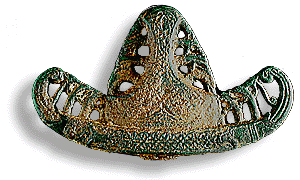

Many objects are examined in the Department of Scientific Research and analysed using X-ray fluorescence to find out whether they contain sufficient gold or silver for them to be considered as 'Treasure'.
Appearances can be deceiving. This Anglo-Saxon sword pommel looked like it was bronze, however, analysis showed it to be silver with traces of gold plating. After cleaning this was much more obvious.
Animated gif of sword pommel being cleaned to give a silver appearance